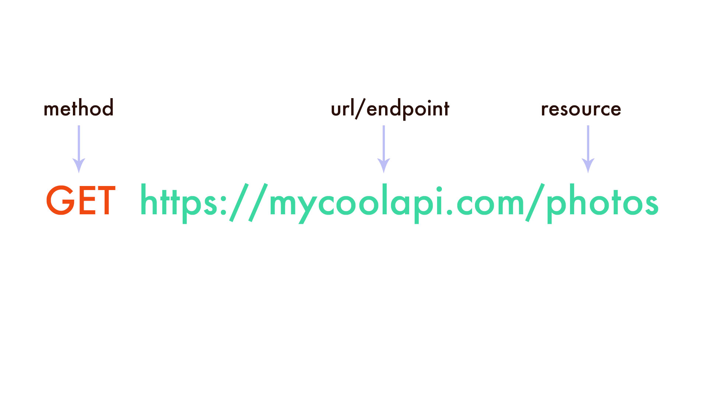
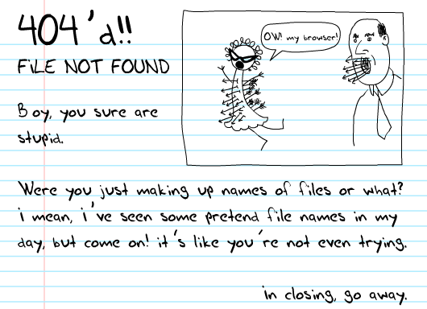
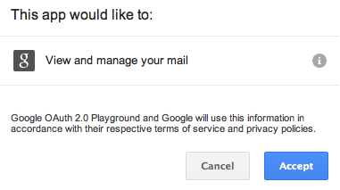

Zero to API Hero
Consuming 3rd party APIs like a pro
Cecy Correa, @cecycorrea
#RailsConf 2016
Who? Why?
My name is Cecy Correa
Associate Engineer at ReturnPath
I help developers integrate our APIs
The problem
Too much magic?
Rails.application.routes.draw do
resources :users
end
$ rake routes
Prefix Verb URI Pattern Controller#Action
users GET /users(.:format) users#index
POST /users(.:format) users#create
new_user GET /users/new(.:format) users#new
edit_user GET /users/:id/edit(.:format) users#edit
user GET /users/:id(.:format) users#show
PATCH /users/:id(.:format) users#update
PUT /users/:id(.:format) users#update
DELETE /users/:id(.:format) users#destroy
Credit: @schneems
Agenda
Tools you can use to consume APIs good (and do other things good too)
- Anatomy of an API call
- HTTP status codes (and what to do about them!)
- Working with gems
- Tools, debugging, testing
- Demo time!
Anatomy of an API call
Anatomy of an API call
Anatomy of an API call
URL: aka endpoint
http://mycoolapi.com/photos
Resource: what you are trying to access (in this case photos)
Anatomy of an API call
Method: aka verb
GET http://mycoolapi.com/photos
The action you want to do.
Anatomy of an API call
Headers: info about the request / response
GET http://mycoolapi.com/photos
Accept: application/json
Host: mycoolapi.com
Anatomy of an API call
Body: data sent / received
GET http://mycoolapi.com/photos
Content-type: application/json
Date: Wed, 3 May 2016 01:23:45
[
{
"photo_url": "http://mycoolapi.com/photos/12345.jpg"
}
]
Assumptions
- Using HTTP protocol
- RESTful API
- Using JSON
Not all APIs are this way, but most you will encounter for public consumption are.
HTTP status codes!
and what to do about them
Status codes
Status codes are not arbitrary!
Status codes have been established, agreed upon (RFC 7231)
Some people spend a lot of time picking the right status code!
(I'm going to focus on the ones used for APIs most often)
Status codes in a nutshell
- 10x: informational
- 20x: everything is a-ok 👍
- 30x: go away (redirects)
- 40x: YOU messed up
- 50x: WE messed up
200
201: created
202
302
400: Your request is bad and you should feel bad
You should not submit the request again without modifications (i.e. check your params, bro)
401: Unauthorized
Check your creds, bro
403: Forbidden
Creds could be wrong, but also not
404
418: I'm a teapot
429: API limit reached
500
Standard error. Not sure what happened but def. not your fault.
503: Unavailable
API could be down, or maybe throttling
For real,
pay attention to the status code you get!
No one expects you to memorize them, you can look them up.
Authentication
- No authentication
- Developer authentication
- User authentication
No authentication
Some APIs don't require authentication
- OMDB
- Open Weather Map
- Data.gov
Developer authentication
Some APIs require authentication in the form of an API key and secret.
How you authenticate via API key and secret depends on the API:
- As part of the URL
- In the Headers
Check your API docs for information on how to authenticate.
DEMO
Let's make some test calls!
- API that requires no authentication
- API that requires some authentication
We'll use cURL for this!


We just used cURL to make API calls!
Anyone can do this!
No excuse for not making test calls before you start integrating the API.
User authentication
In some cases, users may need to grant you permission to access their data or perform actions on their behalf.
- OAuth 1.0 and 2.0
- OAuth dance can be complicated, but lots of libraries available!
- Some APIs facilitate this process.
Authentication vs. Authorization
Authentication: prove you are who you say you are
Authorization: what you are authorized to access (aka scope)
Demo
Let's make an Oauth request and see how it works!

Tools for productivity!
Postman
Postman
Crazy useful functionality for working with APIs!
- Make API calls
- Save API calls
- Create environments to reuse
- Save "runs"
- Download sample "code"
Demo: Let's make an Oauth 1.0 call with Postman
Gems
Official API wrappers / libraries
- Look for official libraries
- Lots of maintainers
- Recently updated
- Good documentation
What if there are no libraries available?
Or if you don't like the library that is available?
Develop against the REST API!
It's easy!
You know the basics!
You know the components of a call
If you've made test calls, you know what to expect
HTTP client
- HTTParty
- Faraday
- HTTP: The Gem!
- Net::HTTP
Great presentation by Hiroshi Nakamura comparing HTTP clients
All HTTP clients are not created equal
3 "pure Ruby" libraries
- Net::HTTP
- Excon
- httpclient
Also patron, which uses libcurl
Other Ruby libraries are wrappers of these ^^
All HTTP clients are not created equal
- HTTParty: wrapper for Net::HTTP
- Faraday: select between Net::HTTP, Excon, or patron
- HTTP: The Gem! is "Native implementation of HTTP"
You're going to want to do some research into what you may need / want.
Demo: Using HTTParty to create your own wrapper
INCEPTION
Caution!
Never commit your API key / secret to source control!
Use environment variables!
Testing & Debugging
Testing
How do you test a 3rd party API you are consuming?
- Should you test to see if the API is down?
- Should you test against the live API?
- Should you test your integration of the API?
Testing
How do you test a 3rd party API you are consuming?
Should you test to see if the API is down?Should you test against the live API?- Should you test your integration of the API? YES!
Need to know if API is down?
Check the API status page!
Most APIs have it.
Subscribe to it, feed it into Slack.
#REALTALK
Why not test against the live API?
Don't test against a live API.
Don't test against a live API.
Don't test against a live API.
Testing your integration: best practices
- Mock / stubb API responses
- Test how you handle the responses, errors
- Clean up after yourself!
Testing your integration: mocking responses
VCR: gem that "records" API responses
Run your tests against it so you don't hit the live API
There's even versions of VCR in other languages!
Trust & Communication are key
Debugging & webhooks
Debugging
- Request Bin
- Runscope
- Mockbin
Request Bin
Runscope
Mockbin
Live Demo!
Let's set up a webhook and test it.
Tweet anything to @cecycorrea to see it in action!